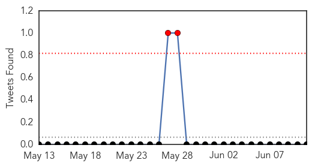
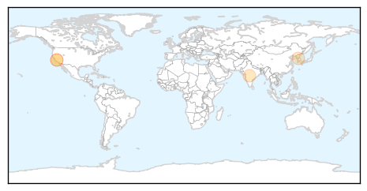
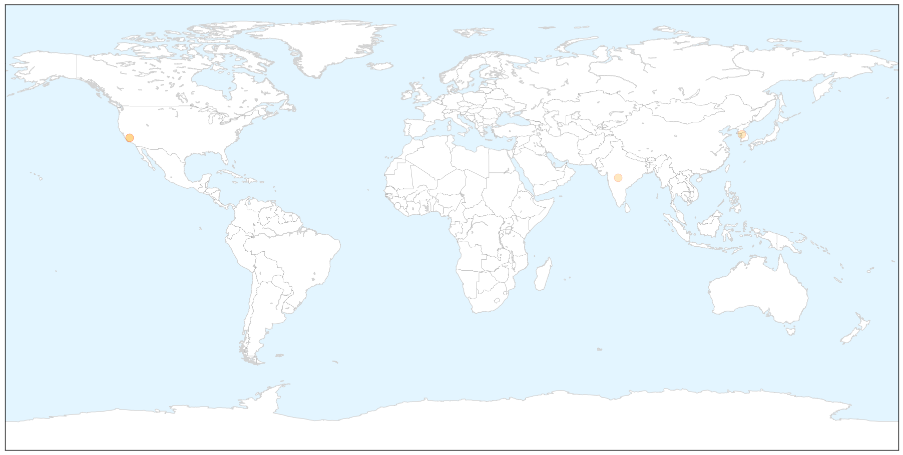
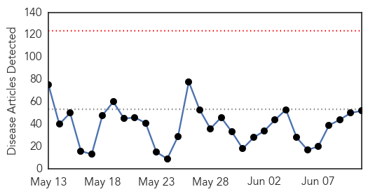
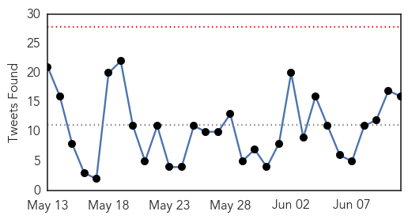
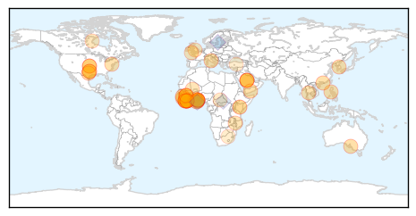
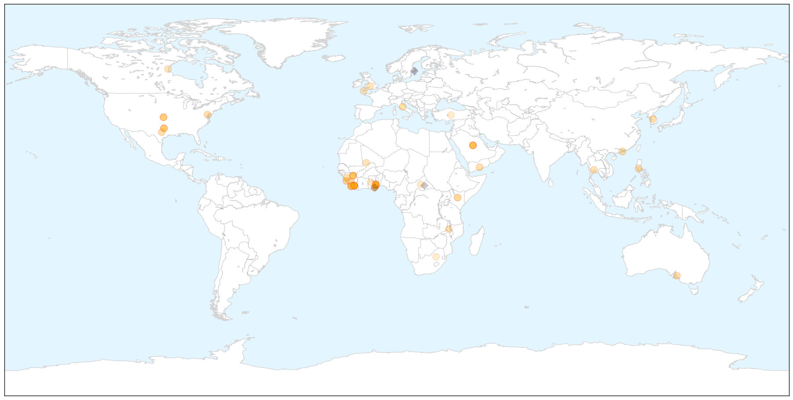
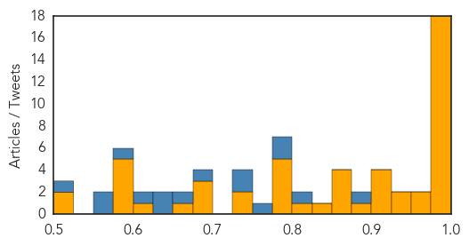

Swine Flu
30-Day Web Trend
0 alerts, 0 warnings

30-Day Twitter Trend
2 alerts, 0 warnings

Article Locations

X

Article Confidences

Top Articles:
- 0.772
- Boy, 12, wins £120,000 in damages after swine-flu jab left him 'severely disabled' by narcolepsy
- 0.755
- Boy Wins 120,000 Pounds Damages for Narcolepsy Caused by Swine Flu Vaccine
- 0.737
- Boy disabled by swine flu Pandemrix jab wins £120k compensation
- 0.735
- Blame game and confusion fuel panic in South Korea - Regional
Top Tweets:
-
No tweets found for Jun 11, 2015
Ebola
30-Day Web Trend
0 alerts, 0 warnings

30-Day Twitter Trend
0 alerts, 0 warnings

Article Locations

X

Article Confidences
Top Articles:
- 1.000
- 4 lessons from Ebola wars
- 1.000
- Charities fear Ebola resurgence after spike in cases
- 1.000
- Ebola outbreak good lesson that preparedness counts
- 1.000
- Will the Disease Spread Like Ebola Did in Africa?
- 1.000
- MERS virus spreading across Asia, South Korea fails to contain outbreak — RT News
- 1.000
- South Korea's MERS virus outbreak can teach U.S.
- 0.999
- Guinea & Sierra Leone see a surge of Ebola cases again: WHO
- 0.999
- Ebola survivors still have virus in eye fluid for 10 WEEKS after the all clear
- 0.998
- L.A. County health officials urge hospitals to be vigilant for MERS
- 0.997
- A New Global Threat Has Local Health Officials on Alert
- 0.997
- New Ebola Cases Reported Near Sierra Leone
- 0.995
- Cross Border Surveillance Key in Ebola Fight
- 0.994
- Liberia still cautious after Ebola-free declaration
- 0.990
- Ghana suspends Ebola vaccine trial after 'guinea pig' backlash
- 0.988
- Baguio on alert for MERS
- 0.986
- No Ghanaian should be a guinea pig for Ebola experiments
- 0.983
- MERS fears pose risks to South Korea's economy
- 0.982
- Stigma leaves Liberia’s Ebola workers high and dry
- 0.956
- I'm ready for Ebola vaccine trial - NDC MP
- 0.956
- 48th CBRN Bde completes mission in Liberia; country declared Ebola-free
- 0.937
- Farming communities survive Ebola virus disease - Sierra Leone
- 0.936
- Fox 28: South Bend, Elkhart IN News, Weather, Sports
- 0.915
- Ghana halts Ebola vaccine trial due to community protests
- 0.913
- SAVSU Technologies unveils special shipping container for Ebola vaccine
- 0.910
- Locals Used As ‘Guinea Pigs’ In Ghana Ebola Trial
- 0.906
- U.S. Army 48th Chemical Brigade Ends Mission in Liberia
- 0.878
- Ministry suspends Ebola vaccine trial
- 0.861
- Police arrest ministry official
- 0.859
- ‘Don’t Run Their Mental Health Programs’
- 0.854
- Politico SL News How the Ebola outbreak has impacted Sierra Leone’s education
- 0.853
- Gov’t donating Ghanaians to the slaughter house – Atik
- 0.842
- Ghana suspends Ebola vaccine trial amid public outcry
- 0.807
- Westcountry servicemen to be honoured with new Ebola medal
- 0.796
- Ebola medal for over 3000 heroes
- 0.789
- Ebola Vaccine Clinical Trials To Come On In Volta Region -
- 0.787
- Rejection of Ebola Vaccine trial a sad day for science
- 0.784
- Ebola vaccine trial: FDA exposes Health Ministry
- 0.777
- Rejection of Ebola Vaccine trial a sad day for science – Prof. Dodoo
- 0.738
- Politico SL News IOM engages Airport & security agencies
- 0.732
- ‘Decision to suspend Ebola vaccine trials regrettable’
- 0.696
- Don’t Think Open Access Is Important?… « Another Word For It
- 0.686
- Shut up! – Prof Dodoo tells MPs, others
- 0.676
- Test Ebola vaccine on gov’t officials – Lawyer
- 0.667
- Cameroon Launches Training Programme
- 0.624
- Sierra Leone News: Over 53,000 ebola test done-Dr Abdul Kamara « Awoko Newspaper
- 0.598
- President Sirleaf Arrives in South Africa; Attends Key Events on the Margins of the 25th Ordinary Session of the African Union
- 0.589
- The doctor who got Ebola
- 0.583
- Turkish charities at work in Senegal
- 0.582
- Missionaries return to Liberia
- 0.578
- Mormon missionaries to return to Liberia
Showing top 50 articles...
Top Tweets:
- 0.894
- MERS in South Korea: Will the Disease Spread Like Ebola Did in Africa? - Healthline http://t.co/tpyYpeTYje ebola EVD
- 0.820
- RT: Ebola response stalls: " highest weekly total number of cases reported from Sierra Leone since late March" http://t.co…
- 0.797
- SierraLeone. Farming communities survive Ebola virus disease FAO https://t.co/6ifCuq8EuY
- 0.793
- Ghana Halts Ebola Vaccine Trial Due To Community Protests - Medical Daily http://t.co/ZTNMDZsb01 ebola EVD
- 0.769
- Ghana halts Ebola vaccine trial due to community protests - Reuters Africa http://t.co/ZcOYKw3wLR ebola EVD
- 0.749
- Ebola lurks in eye fluid after survival from virus research finds - ABC Online http://t.co/uGEjh3GGj9 ebola EVD
- 0.738
- Ghana suspends Ebola vaccine trial after 'guinea pig' backlash - Medical Xpress http://t.co/1QgKvlLabb ebola EVD
- 0.695
- Ghana halts Ebola vaccine trial due to community protests - Reuters http://t.co/MrzToJXhd4 ebola EVD
- 0.652
- Liberian Schools Affected By Ebola Receive 700000 Education Kits - Huffington Post http://t.co/3xbBjFERlH ebola EVD
- 0.643
- Ebola Stigma Keeps Many from Work in Liberia - Voice of America http://t.co/wwHT8QJ6ZP ebola EVD
- 0.643
- Ebola Stigma Keeps Many From Work in Liberia - Voice of America http://t.co/jYmBQPAEYg ebola EVD
- 0.608
- In total 31 confirmed cases of Ebola were reported in the week ending 7 June: 16 cases in Guinea and 15 in... http://t.co/4X22yZsUcN
- 0.588
- MERS in South Korea: Will the Disease Spread Like Ebola Did in Africa? - Healthline http://t.co/Wk6XpWOqe7
- 0.574
- Ghana halts Ebola vaccine trial due to community protests - Business Insider http://t.co/FZVx5lfloH ebola EVD
- 0.572
- RT: Essential items delivered to quarantined families in Ebola-hit Sierra Leone to support them go through quarantine. http://t.…
- 0.513
- Scientists are testing Zoloft to treat Ebola - Futurity: Research News http://t.co/M0MWnV9uCW ebola EVD